Available now
Sophia for Chrome
Select text on any web page and Sophia's panel shows fixes, better words and a density read. Works in Chrome and other Chromium browsers.
How to install it
SophiaA DC Labs product · Free & open source · Early release
Sophia reads what you write and points out spelling slips, grammar mistakes and better word choices, right where you're typing. Everything is checked on your machine. No account, no API key, and nothing you write is sent anywhere.
Type as you normally would, or select a passage you want a second opinion on.
Sophia marks what needs a look, and each kind of mark has its own shape, not just its own colour.
Open a mark to see the fix and why. Nothing changes in your text until you say so.
Features
Sophia checks your writing with code that runs on your own computer. There's no account to make, no key to paste and no server on the other end, so your drafts, emails and notes stay yours.
Three kinds of help, marked three ways: a solid line for spelling, a dotted line for grammar and a wave for a better word.
See when a sentence is getting heavy, so you know where to trim before your reader feels it.
A quiet marble-and-light panel that follows your system's light or dark mode, with a Dawn and a Dusk theme if you prefer.
Every suggestion waits for you. Sophia never changes a word on its own.
MIT licensed and on GitHub, so anyone can check exactly what it does.
Two ways to use it
Available now
Select text on any web page and Sophia's panel shows fixes, better words and a density read. Works in Chrome and other Chromium browsers.
How to install itIn development
The same careful reader in every app on your Mac. Mistakes are underlined as you pause, and ⌘⇧K offers a rewrite: proofread, more concise, more professional, friendlier, or your own instruction. Grammar is checked by the open-source Harper engine in under a millisecond, and rewrites come from Apple's on-device model, so this text never leaves your Mac either.
There's no download yet. Developers can build it from the source today; it needs macOS 14 or later, and rewrites need a Mac with Apple Intelligence.
Build it from sourceCompare
The facts that matter most, as of October 2026, from each product's own site. Prices and features change, so check the linked pages.
| Feature | Sophia | Grammarly | LanguageTool | Apple Writing Tools |
|---|---|---|---|---|
| Where your text is checked | On your machine, always | On Grammarly's servers | On LanguageTool's servers, or on a server you run yourself | On your Mac, or on Apple's Private Cloud Compute |
| Account needed | No | Yes | Not for basic checks | No, it's built in |
| Price | Free | Free tier; Pro is paid | Free tier; Premium is paid | Free, built in |
| Open source | Yes, MIT | No | The core engine, LGPL | No |
| Where it runs | Chrome today; Mac in development | Browsers, Mac, Windows, iPhone, Android | Browsers, desktop apps, office add-ons | Apple devices with Apple Intelligence |
Where they win: Grammarly and LanguageTool are mature, check many more languages and mistakes, and run on nearly every device. Apple Writing Tools needs nothing installed. Sophia is new, English-first and still growing its dictionary. Choose it if you want your writing to stay on your machine. Sources: Grammarly plans and privacy policy, LanguageTool Premium and source, Apple Writing Tools.
Get Sophia

Download Sophia (.zip)Chrome or another Chromium browser · nothing else to install
Or with Git:
git clone https://github.com/danieljcuesta007/sophiaSophia is an early release, so for now you add it to Chrome yourself instead of from the Web Store. It takes about a minute, and you can see every file you're adding before you do.
Chrome may remind you that a developer-mode extension is on. That's expected for anything added this way.
Sophia reads only the text you select or the field you're writing in, to check it. Its settings are kept in your browser's own storage. You can read the whole source on GitHub.
About the creator
Author of Wednesdays Of Wisdom, a weekly newsletter focused on timeless principles for daily action. Co-founder of Addisuna Coffee Co., an Ethiopian specialty coffee company sponsoring children's education in Ethiopia.
University of Notre Dame alumnus. Currently operating and building out of New York, New York. Growing the good in business with IBM Consulting.
Sophia is a DC Labs product, the label for the tools he makes.
Questions
Yes. Sophia is open source under the MIT license, with no account, trial or word limit.
No. Your text is checked by code running on your computer, and Sophia sends nothing you write anywhere. The Chrome panel loads its typefaces from Google Fonts, which is a request for fonts, not for your text, and it falls back to your system's fonts without it.
Honestly, it's earlier. Sophia catches common spelling slips, grammar mistakes and confusable words, but its spelling list is still small and it checks English first. It's built for people who would rather have a careful local reader than send their writing to a server.
The Mac version is built and in testing. Until there's a download, developers can build it from the source.
It's an early release. Here's why, and how to add it in about a minute.
No. They're named only to compare and to credit. Sophia is an independent project.